2. Instalación del Sistema Operativo en el equipo servidor
INSTALACIÓN UBUNTU 16.04
Vamos a explicar mediante capturas y paso a paso el proceso de instalación de Ubuntu 16.04. en Virtual Box.
En el caso de que vosotros escojáis la opción de instalación directa en el equipo, deberéis continuar leyendo en el apartado de instalación del Sistema Operativo
1.- CONFIGURACIÓN DE VIRTUAL BOX
Hemos elegido la versión de escritorio (16.04.02) desde la página oficial de ubuntu y descargaremos la imagen ".iso"
https://www.ubuntu.com/download/desktop/thank-you?country=ES&version=16.04.2&architecture=amd64
Abrimos virtualbox y pulsamos en nueva para agregar la nueva máquina virtual
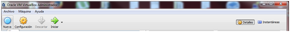
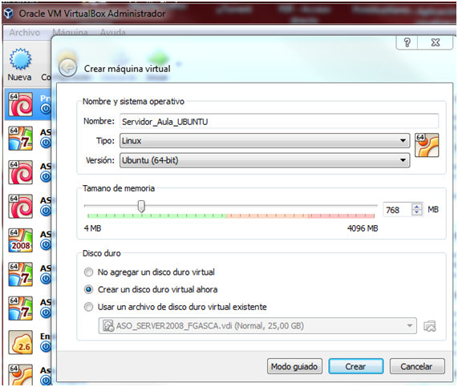
Como vemos le ponemos un nombre a nuestra elección y dejamos el resto de los elementos como nos aparece por defecto, si el ordenador sobre el que se implemente va a estar dedicado sólo a ser servidor del aula, podemos aumentar los parámetros como el tamaño de la memoria virtual o física, Pulsamos en crear.
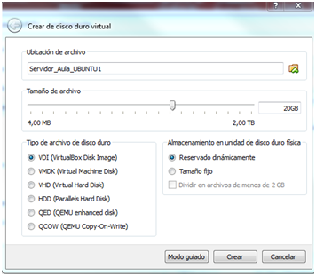
Configuramos ahora la memoria física (disco duro) que subimos al menos a 20.00 GB (Siempre podremos ampliarla posteriormente conforme más memoria se necesite). De nuevo Pulsamos en crear
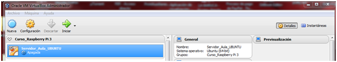
Ya la vemos creada y ahora pasaremos a configurarla, la seleccionamos y pulsamos sobre el botón Configuración. Para no alargarnos demasiado en la explicación, comentar que desde este lugar podremos configurar nuestra máquina en todo lo relativo a conexiones de red, inserción de imágenes con software, etc. Ahora vamos a ir un poco más al grano.
Vamos al menú Almacenamiento y Pulsamos sobre el disco DVD que aparece vacío para posteriormente pulsar en la otra imagen de la derecha que tiene ese mismo icono.
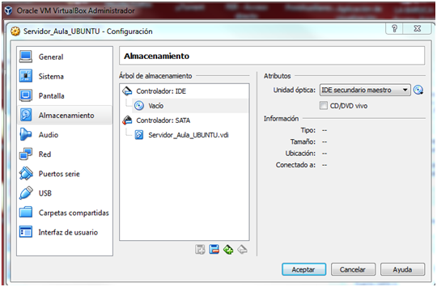
Al hacerlo se nos abrirá un menú en el que deberemos de buscar y seleccionar la Imagen .iso que nos acabamos de descargar.
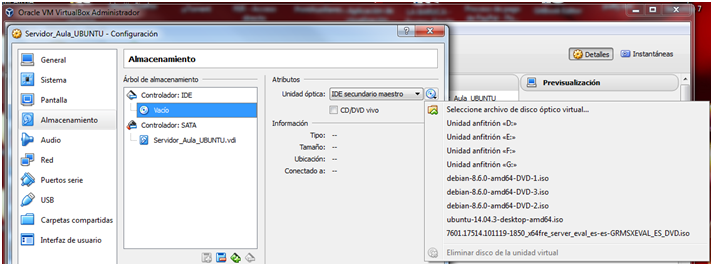
Una vez seleccionada, veremos como nos aparece debajo del Controlador IDE
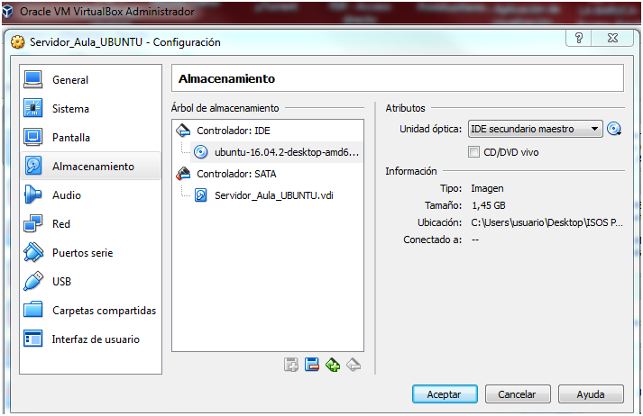
Aceptamos y ya no tenemos más que pulsar sobre el botón iniciar para que comience la instalación del sistema operativo.

Configurada ya nuestra VirtualBox, podemos pasar a Instalar el Sistema Operativo.
2.- INSTALACIÓN DEL SISTEMA OPERATIVO:
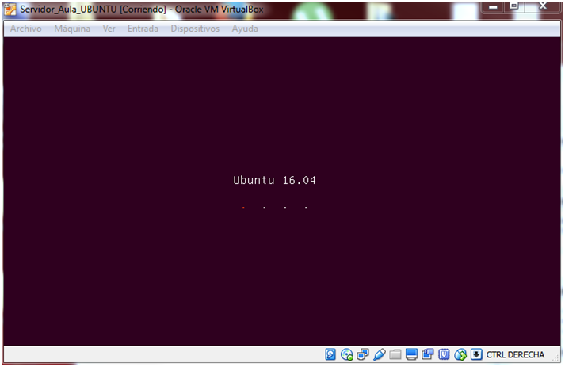
La instalación comenzará automáticamente y en principio no debería dar problemas.
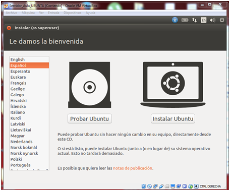
Seleccionamos el idioma y pulsaremos sobre Instalar Ubuntu.
En la siguiente pantalla, y si la red es buena, recomendamos marcar ambas opciones, sino es así, es mejor dejarlo para realizar en tareas posteriores a la instalación.
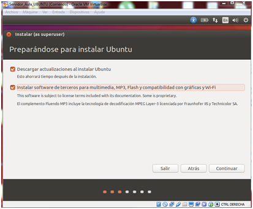
Pulsamos continuar.
En la pantalla del tipo de instalación, dejamos la que nos aparece por defecto que formateará todo el disco duro e instalará el nuevo sistema operativo.
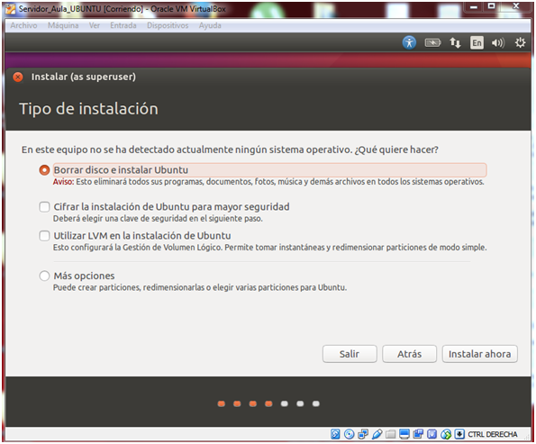
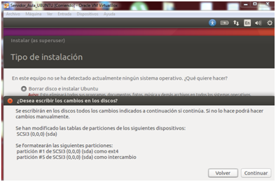
!!!!! ES OBVIO QUE ESTA OPCIÓN ELIMINARÁ CUALQUIER RESTO DE NEUSTRO ANTERIOR EQUIPO, INCLUÍDOS ARCHIVOS QUE PUDIERAMOS TENER ¡¡¡¡¡
Pulsamos sobre continuar y sobre instalar ahora.
En las siguientes pantallas es cuestión de elegir las siguientes opciones:
Lugar: Madrid; Teclado: Español
Nombre de usuario y contraseña.
Nombre de equipo y del servidor.
Estas últimas opciones vendran determinadas por las necesidades de cada uno de los Servidores, número de personas que actuarán como admin, etc.
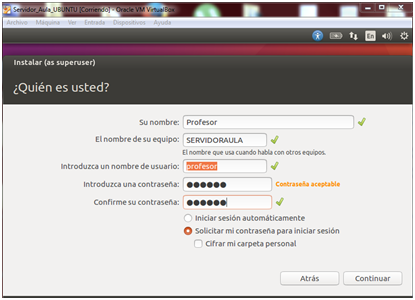
Una vez pulsemos en continuar, comenzará la instalación propiamente dicha por lo que tendremos que esperar (en función de las capacidades del equipo más o menos tiempo) mientras tanto siempre podemos observar alguna de las novedades que trae el nuevo sistema operativo.
Finalizado el proceso reiniciamos nuestro equipo que este listo para el siguiente Módulo
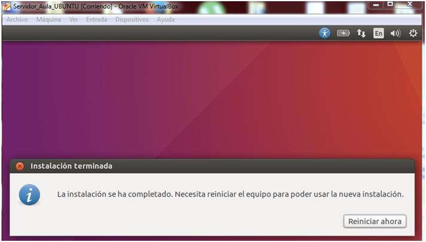
*/ TODAS LAS IMÁGENES UTILIZADAS EN EL PRESENTE MODULO HAN SIDO ELABORADAS POR EL AUTOR DEL CURSO.

Monta tu aula de informática con Raspberry Pi por Fernando Gasca Andreu bajo licencia Creative Commons Reconocimiento-NoComercial-CompartirIgual 4.0 Internacional License.